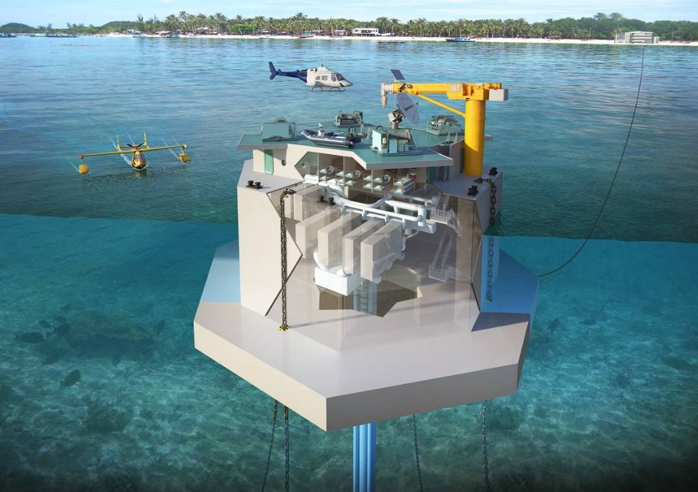

Home
Activity 2
Ocean Thermal Energy Conversion (OTEC) — Activity 2
Develop the block diagram of an OTEC system for electricity production and freshwater generation.
Problem Statement
Activity 2: Develop the block diagram of an OTEC system for electricity production and freshwater generation.

(Figure: Reference image for OTEC)

Overview — How OTEC Works
- Surface Heat: Sun warms the top ocean layer (~25–30 °C).
- Deep Cold: 700–1000 m water remains ~4–8 °C.
- Heat Engine: A closed-cycle Rankine loop (often ammonia) runs between warm and cold sources.
- Continuous: The ocean is a vast, stable heat reservoir → 24/7 baseload.
- Co-benefits: Cold-water stream enables desalination & district cooling (SWAC).
Source of Energy
- Thermal Gradient (ΔT): Usable when ΔT ≳ 20 °C.
- Low-grade Heat: Large volumes compensate for low efficiency.
- Tropical Bands: Most suitable between ~20° N and 20° S.
Conversion Process (Closed-Cycle)
- Evaporation: Warm seawater heats a working fluid → vapor.
- Expansion: Vapor drives a turbine coupled to a generator.
- Condensation: Cold deep seawater condenses the vapor → liquid.
- Pumping: Feed pump returns liquid to evaporator; loop repeats.
- Water Intakes/Outfalls: Designed to minimize biofouling & mixing impacts.
Output / Utilization
- Electricity: Baseload supply for island/coastal grids.
- Freshwater: Hybrid OTEC + desal (flash/MSF/MED) using low-grade heat.
- Cooling & Aquaculture: Cold-water stream for SWAC and nutrient-rich flows.
Real-world Relevance
- Fuel Independence: Cuts diesel imports for islands.
- 24/7 Clean Power: Complements solar/wind variability.
- Engineering Focus: Deep-water pipes, corrosion control, biofouling, environmental monitoring.
- Local Jobs: Marine construction, O&M, monitoring.
Conversion Flowchart
Back to topQuick FAQ
Minimum temperature difference?
Practical OTEC needs ΔT ≳ 20 °C between surface and deep water for useful output.
Why ammonia as working fluid?
Low boiling point, good heat transfer, and availability; handled with strict safety controls.
Closed vs. open cycle?
Closed uses a refrigerant loop. Open flashes seawater to steam and can directly yield freshwater; hybrids exist.